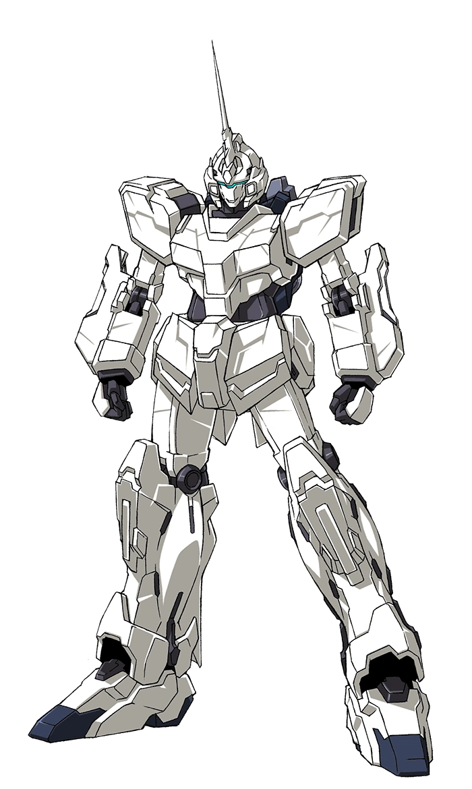

The RX-0 Unicorn Gundam (ユニコーン ガンダム Yunikōn Gandamu?, or Unicorn, Unicorn Gundam 01, Singularity One) is the titular mobile suit of the Mobile Suit Gundam Unicorn novel, its OVA adaptation and the television re-cut. It was developed by Anaheim Electronics for the Earth Federation as part of the UC project. It was piloted by Banagher Links during the Laplace Incident.
Return to home page